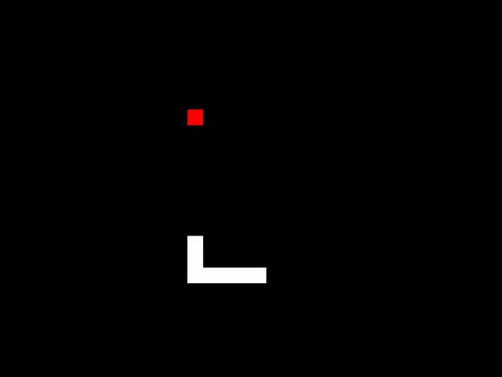

Hice el famoso juego Snake en C desde 0, aunque utilizando ChatGPT para el movimiento de la serpiente. Fue bastante complicado aún con ayuda de la IA debido a que desconocia por completo el como hacer un panel, un punto y el como hacer que ese punto se moviera por ordenes del teclado.
Para poder jugarlo se descarga el proyecto de Github, escribes make en la terminal y ya estaría (esto obviamente en GNU/Linux).
Cuenta con solo dos niveles; fácil y dificil, y se empieza a jugar presionando cualquier tecla y ya luego se mueve la serpiente con las flechas del teclado.
